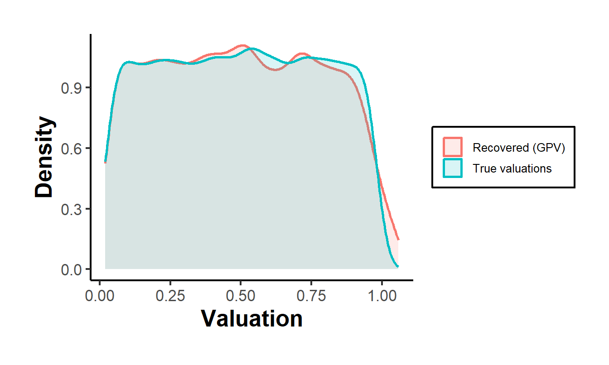
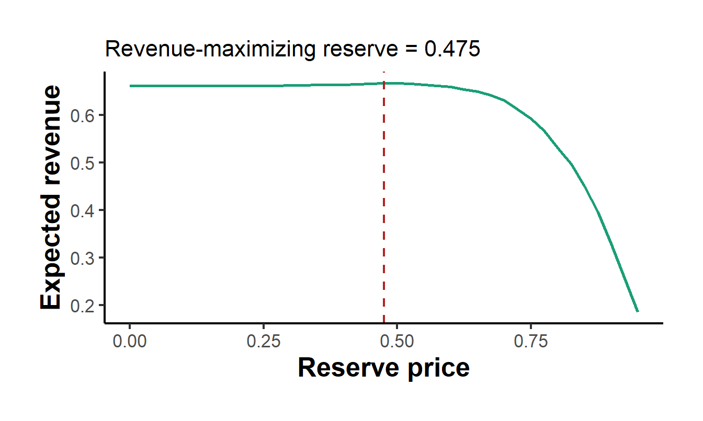

Chapter 68 Structural Models of Auctions
This chapter belongs to the structural econometrics cluster, alongside the treatments of demand estimation, dynamic discrete choice, and structural selection. Auctions occupy a privileged place in that cluster because the mapping from primitives to data is unusually explicit. A bidder holds a valuation that the analyst never sees, the auction rules and the equilibrium of the bidding game turn that valuation into a bid, and the bid is recorded. The structural program reverses this arrow. Given the rules and a behavioral assumption about equilibrium play, the observed distribution of bids is enough to recover the latent distribution of valuations, and from there to answer questions about revenue, efficiency, and optimal design that no reduced form description of bids alone can address.
The reason auctions are a canonical structural setting is that the equilibrium bid function is a known mapping from valuations to bids. Once the analyst commits to a format and a paradigm, that mapping is a tight theoretical restriction rather than a free regression specification. Inverting it converts a problem about unobservable preferences into a problem about observable bid distributions, which can be estimated by ordinary nonparametric tools. The valuation distribution is the object the economist wants, and the auction structure is what makes it recoverable.
68.1 Why Auctions Are a Canonical Structural Setting
Consider a single indivisible object sold to one of \(n\) bidders. Bidder \(i\) holds a valuation \(v_i\), a private number measuring willingness to pay, drawn from a distribution \(F\) with density \(f\) on a support \([\underline{v}, \overline{v}]\). The analyst observes the bids \(b_i\) that bidders submit but not the valuations \(v_i\) that generated them. In equilibrium each bidder follows a strategy \(b_i = \beta(v_i)\), a function that the theory pins down given the format and the informational environment. Because \(\beta\) is strictly increasing under standard conditions, it can be inverted, so that \(v_i = \beta^{-1}(b_i)\). The distribution of bids \(G\) and the distribution of valuations \(F\) are then linked by the change of variables
\[ G(b) = F\big(\beta^{-1}(b)\big), \]
and the structural task is to use the observed \(G\), together with the equilibrium restriction that fixes \(\beta\), to back out the unobserved \(F\). The power of the approach is that \(F\) is a primitive: it does not change when the auction format or the reserve price changes, so once recovered it supports counterfactuals about designs that were never run. This is the structural payoff that a purely descriptive model of bids cannot deliver.
68.2 Formats and Paradigms
The four classic single-object formats divide into two pairs. In the first-price sealed-bid auction each bidder submits one sealed bid and the highest bidder wins and pays the bid. In the Dutch auction a price descends from a high level until a bidder accepts, which is strategically equivalent to the first-price auction because the only decision is the price at which to commit. In the second-price sealed-bid auction, the Vickrey auction, the highest bidder wins but pays the second highest bid, and in the ascending English auction the price rises until one bidder remains. The second-price and English formats share the feature that, under private values, bidding one’s own valuation is a dominant strategy, so bids reveal valuations directly and the inversion problem is trivial. The first-price and Dutch formats shade bids below valuations by an amount that depends on competition and on beliefs about rivals, which is what makes their structural analysis interesting.
The informational paradigm matters as much as the format. Under independent private values (IPV), each bidder knows her own valuation, valuations are independent draws from \(F\), and one bidder’s valuation carries no information about another’s. Under the common value paradigm the object is worth the same unknown amount to all bidders, for example the recoverable oil under a tract, and each bidder sees only a private signal correlated with that common value. The intermediate and most general case is the affiliated values model of Milgrom and Weber (1982), in which valuations or signals are positively dependent, so that a high signal for one bidder makes high signals for others more likely. Affiliation nests both private and common values and delivers the central comparative result that, on average, the English auction raises more revenue than the second-price auction, which in turn raises more than the first-price auction, a ranking that collapses to revenue equivalence only in the independent private values benchmark.
The common value paradigm introduces the winner’s curse. The bidder who wins is the one whose signal was most optimistic, so conditioning on winning is bad news about the true value: the winner is precisely the bidder most likely to have overestimated. Rational bidders anticipate this and shade their bids to correct for the adverse selection inherent in winning. A bidder who bids naively, as if her signal were unbiased even conditional on winning, will systematically overpay. The winner’s curse is not a behavioral mistake in the equilibrium model but a force that disciplined bidders build into their strategies, and detecting whether bidders account for it is one empirical reason to distinguish common from private values.
68.3 Identification and Estimation
68.3.1 The First-Order Condition of the First-Price Auction
Take the symmetric IPV first-price auction with \(n\) bidders. A bidder with valuation \(v\) choosing a bid \(b\) wins when her bid exceeds the highest of the other \(n-1\) bids, an event whose probability, under the equilibrium strategy, is \(G(b)^{n-1}\) in terms of the bid distribution. She solves
\[ \max_{b}\; (v - b)\, G(b)^{n-1}, \]
trading the surplus \(v - b\) she earns on winning against the probability of winning. The first-order condition equates the marginal gain from a higher chance of winning against the marginal cost of a smaller margin,
\[ (v - b)\,(n-1)\, G(b)^{n-2} g(b) - G(b)^{n-1} = 0, \]
where \(g\) is the density of bids. Solving for the valuation yields the relation at the heart of the modern literature,
\[ v = b + \frac{1}{n-1}\,\frac{G(b)}{g(b)}. \]
This expression says that a bidder’s valuation equals her bid plus a markup that is large when bids are sparse near \(b\), that is, when \(g(b)\) is small, and that vanishes as competition \(n\) grows. The valuation on the left is unobserved, but every object on the right, the bid \(b\), the bid distribution \(G\), and the bid density \(g\), is estimable from data on bids alone.
68.3.2 The Guerre, Perrigne, and Vuong Estimator
Guerre et al. (2000) turned this observation into a fully nonparametric two-step estimator that requires no parametric assumption on \(F\) and no numerical solution of the equilibrium differential equation. The logic is to treat the right-hand side of the first-order condition as a recipe for constructing a pseudo-value for every observed bid. In the first step, the analyst estimates the bid distribution \(G\) by the empirical distribution function of the bids and the bid density \(g\) by a kernel density estimator. In the second step, each bid is mapped to a pseudo-value through
\[ \widehat{v}_i = b_i + \frac{1}{n-1}\,\frac{\widehat{G}(b_i)}{\widehat{g}(b_i)}, \]
and the collection of pseudo-values \(\{\widehat{v}_i\}\) is treated as a sample from the valuation distribution \(F\), whose density or quantiles are then estimated by any standard method. The estimator is appealing because it sidesteps the equilibrium inversion entirely: rather than solving for \(\beta\) and inverting it, it uses the first-order condition to read valuations off bids directly. Guerre et al. (2000) established that this two-step procedure attains the optimal nonparametric rate for estimating \(f\), which is why it has become the default empirical strategy for first-price auctions.
68.3.3 Identification Results
The pseudo-value construction presumes that \(F\) is identified from \(G\) to begin with, and the general identification theory was settled by Athey and Haile (2002). They asked, format by format and paradigm by paradigm, exactly which features of the model are recoverable from observed bids under the assumption of equilibrium play, treating the number of bidders, the presence of reserve prices, and the dependence structure as known or varying. For the symmetric IPV first-price auction their results confirm that \(F\) is nonparametrically identified, which is the formal license for the Guerre et al. (2000) inversion. They also delineate the boundaries of identification, showing where additional structure or exclusion restrictions, such as exogenous variation in the number of bidders, become necessary to separate the model’s components.
The common value case is far harder, a difficulty made precise by Laffont et al. (1995) and the literature that followed. The obstacle is that private and common value models can generate identical distributions of observed bids, so that the data cannot, without further restrictions, tell whether bidders hold independent private valuations or correlated signals of a common value. Intuitively, the bid distribution summarizes equilibrium behavior but does not by itself reveal whether the shading in bids reflects private value markups or common value corrections for the winner’s curse. Identifying common value models therefore relies on auxiliary variation, such as the response of bids to the number of competitors, since the winner’s curse correction sharpens as more rivals are added in a way that pure private value models do not predict.
68.4 Extensions
The baseline estimator extends in several directions that matter for applied work. Risk aversion breaks the neutral first-order condition above, because a risk averse bidder values the certainty of winning more and therefore bids more aggressively; the same observed bids are then consistent with a different and less dispersed valuation distribution, so risk attitudes and valuation heterogeneity are entangled. Guerre et al. (2009) show that risk aversion is nonetheless nonparametrically identified using exclusion restrictions, exogenous variation in the number of bidders or in covariates that shift competition without shifting values, and Campo et al. (2011) supply an implementable semiparametric estimator with a parametric utility and a nonparametric value distribution. A practical refinement to the GPV second step replaces the ad hoc boundary trimming used in the simulation below with a principled boundary correction, recovering the efficiency that trimming discards (Hickman and Hubbard 2015).
Affiliated and common values generalize the independent-private-values benchmark. The affiliated private value model is identified and estimable when bidder signals are positively dependent (Li et al. 2002, 2000), and the common value model, in which the object is worth the same unknown amount to all bidders, brings the winner’s curse to center stage. Recovering common values is harder because a bid reflects both a valuation and the inference a rational bidder draws from winning, but the equilibrium imposes testable restrictions (Hendricks et al. 2003), and structural estimation shows that adding bidders intensifies the winner’s-curse correction and induces more cautious bidding, a comparative static that distinguishes common from private values (Hong and Shum 2002; Paarsch 1992). The general question of which paradigm is identified from bids alone was settled format by format by Athey and Haile (2002).
Unobserved heterogeneity across auctions, where some attract systematically higher valuations for reasons the analyst does not record, contaminates the pooled bid distribution. Krasnokutskaya (2011) strips out auction-level unobserved heterogeneity by deconvolution, exploiting the separability of the common component from the idiosyncratic bidder draw, while Roberts (2013) uses the seller’s reserve price as a control function for it, and An et al. (2010) treat even the number of potential bidders as latent and recover it by a misclassification argument. Entry introduces a prior stage in which potential bidders decide whether to incur a cost to participate, so the bidder set is selected and the number of bidders is endogenous. Ignoring it confounds selection with valuation differences, and a literature models the two stages jointly, allowing entry to be selective on value (Li and Zheng 2009; Gentry and Li 2014) and showing empirically that auction format affects participation and revenue together (Athey et al. 2011).
Ascending auctions raise a different difficulty: the English auction ends when the second-to-last bidder drops out, so the winner’s valuation is never observed, only bounded. Rather than impose the strong button-auction assumptions that would point-identify the model, Haile and Tamer (2003) replace them with two weak behavioral inequalities and obtain partial-identification bounds on the valuation distribution, a leading example of the bounds approach in structural econometrics and a natural complement to the point-identified first-price estimator developed here.
68.5 Policy and Counterfactual Design
The reason to recover \(F\) rather than merely describe bids is that \(F\) supports counterfactual reasoning about designs the seller might choose. The leading application is the optimal reserve price. A reserve price excludes low valuations and so risks losing a sale, but it also forces bidders above the reserve to compete against a credible outside option, raising the price they pay. Knowledge of \(F\) lets the analyst compute the reserve that maximizes expected revenue, which under regularity is the value \(r\) solving \(r - (1 - F(r))/f(r) = v_0\), where \(v_0\) is the seller’s own valuation, exactly the marginal revenue logic of monopoly pricing applied to the bidder with the reserve valuation. Revenue comparisons across formats follow the same template: with \(F\) in hand the analyst simulates the first-price, second-price, and ascending formats and reports which raises more, recovering the revenue equivalence benchmark under IPV and the affiliation-driven ranking otherwise. More broadly, the recovered primitive underwrites counterfactual mechanism design, evaluating bidder subsidies, set-asides, reserve schedules, and entry promotion against the revenue and efficiency they would deliver, none of which is answerable from observed bids alone because each counterfactual changes the equilibrium bidding strategy and hence the bid distribution itself.
68.6 Simulation: Estimating Valuations from First-Price Bids
To make the inversion concrete we simulate a symmetric IPV first-price auction in which valuations are uniform on the unit interval, a case for which the equilibrium bid function has the closed form \(\beta(v) = v\,(n-1)/n\). We draw valuations, compute equilibrium bids from this closed form, and then pretend we observe only the bids. Applying the Guerre et al. (2000) inversion, we estimate the bid distribution by its empirical CDF and the bid density by a kernel, recover a pseudo-value for each bid through the first-order condition, and compare the distribution of recovered values against the known truth.
# Symmetric IPV first-price auction with Uniform(0,1) valuations.
# Equilibrium bid function: beta(v) = v * (n - 1) / n.
n_bidders <- 5 # bidders per auction
n_auctions <- 4000 # number of independent auctions
# Draw one representative bidder's valuation per auction, then all bids.
# For the inversion we pool bids across auctions (same n in each).
v_true <- runif(n_auctions * n_bidders) # latent valuations
b_obs <- v_true * (n_bidders - 1) / n_bidders # equilibrium bids
# Step 1: nonparametric estimates of the bid CDF and bid density.
G_hat <- ecdf(b_obs) # empirical bid CDF
dens <- density(b_obs, n = 1024) # kernel bid density
g_hat <- approxfun(dens$x, dens$y, rule = 2) # interpolate density
# Step 2: GPV inversion. Each bid maps to a pseudo-value via the FOC:
# v = b + (1 / (n - 1)) * G(b) / g(b).
v_hat <- b_obs + (1 / (n_bidders - 1)) * G_hat(b_obs) / g_hat(b_obs)
# Trim a small fraction near the boundaries where the kernel density is
# unreliable, a standard precaution with the GPV estimator.
keep <- b_obs > quantile(b_obs, 0.02) &
b_obs < quantile(b_obs, 0.98)
v_hat_trim <- v_hat[keep]
v_true_trim <- v_true[keep]The pseudo-values in v_hat are the recovered valuations. Because the data generating process is known, we can check the recovery directly. The table below compares quantiles of the true valuation distribution against quantiles of the recovered one, and the figure overlays the two densities.
probs <- c(0.10, 0.25, 0.50, 0.75, 0.90)
auc_tab <- data.frame(
Quantile = probs,
Value_true = round(quantile(v_true_trim, probs), 3),
Value_recovered = round(quantile(v_hat_trim, probs), 3)
)
auc_tab
#> Quantile Value_true Value_recovered
#> 10% 0.10 0.114 0.115
#> 25% 0.25 0.262 0.262
#> 50% 0.50 0.502 0.499
#> 75% 0.75 0.737 0.737
#> 90% 0.90 0.883 0.887The recovered quantiles sit close to the truth across the distribution. Figure 68.1 overlays the true and recovered valuation densities, confirming that the inversion recovers the latent valuations from bids alone without ever using the true valuations in the estimation. The agreement is not mechanical: the estimator saw only b_obs and the assumed equilibrium structure.
library(ggplot2)
plot_df <- rbind(
data.frame(value = v_true_trim, series = "True valuations"),
data.frame(value = v_hat_trim, series = "Recovered (GPV)")
)
ggplot(plot_df, aes(value, color = series, fill = series)) +
geom_density(alpha = 0.15, linewidth = 0.9) +
labs(
x = "Valuation",
y = "Density",
color = NULL, fill = NULL
) +
causalverse::ama_theme()
Figure 68.1: True versus recovered valuation densities for a symmetric IPV first-price auction with five bidders and Uniform(0,1) valuations. The recovered density is constructed by the Guerre, Perrigne, and Vuong inversion applied to observed bids only, with no use of the latent valuations.
The two densities are nearly coincident over the interior of the support, with the familiar boundary degradation that motivates the trimming: the kernel density of bids is biased near the edges of its support, which inflates the markup term \(G(b)/g(b)\) there and distorts the recovered values at the extreme quantiles. The exercise is a self-contained demonstration of the structural logic of the chapter. The auction rules supplied the first-order condition, the first-order condition supplied the inversion, and the inversion turned a distribution of observed bids into the distribution of unobserved valuations that the seller would need to choose a reserve price or compare formats.
68.7 Counterfactual: The Optimal Reserve Price
The recovered valuation distribution is not the end of the analysis but its beginning, because it lets the seller evaluate designs that were never run. The leading example is the optimal reserve price. Using the pseudo-values from the simulation above as the estimated valuation distribution, we compute the expected revenue of the auction as a function of the reserve and locate the revenue-maximizing reserve, which by Myerson (1981) solves \(r - (1 - F(r))/f(r) = v_0\) and, for the uniform valuations of the simulation with a seller value of zero, equals one half.
set.seed(8)
# Resample bidders' valuations from the GPV-recovered distribution, then compute
# expected revenue under a reserve r. By revenue equivalence (IPV) the expected
# revenue equals that of a second-price auction: the winner pays max(r, second
# highest value) when the highest value clears the reserve, and zero otherwise.
n_sim <- 8000
V <- matrix(sample(v_hat_trim, n_sim * n_bidders, replace = TRUE),
nrow = n_sim, ncol = n_bidders)
top2 <- t(apply(V, 1, function(x) sort(x, decreasing = TRUE)[1:2]))
highest <- top2[, 1]; second <- top2[, 2]
revenue_at <- function(r) mean((highest >= r) * pmax(r, second))
r_grid <- seq(0, 0.95, by = 0.025)
rev_grid <- vapply(r_grid, revenue_at, numeric(1))
r_star <- r_grid[which.max(rev_grid)]
library(ggplot2)
ggplot(data.frame(reserve = r_grid, revenue = rev_grid), aes(reserve, revenue)) +
geom_line(color = "#1b9e77", linewidth = 0.9) +
geom_vline(xintercept = r_star, linetype = "dashed", color = "firebrick") +
labs(x = "Reserve price", y = "Expected revenue",
subtitle = paste0("Revenue-maximizing reserve = ", r_star)) +
causalverse::ama_theme()
Figure 68.2: Expected auction revenue as a function of the reserve price, computed from the GPV-recovered valuation distribution. The revenue-maximizing reserve (dashed) is near the theoretical optimum of 0.5 for uniform valuations with a zero seller value, demonstrating that the recovered primitive supports counterfactual mechanism design.
The revenue curve is single-peaked: a reserve that is too low forgoes the leverage a credible outside option provides, while a reserve that is too high too often kills the sale, and the optimum balances the two near the theoretical value. That this number can be computed at all is the entire point of the structural exercise, because the optimal reserve depends on the valuation distribution, which is unobserved and which only the inversion recovers. A reduced-form regression of prices on observed reserves could never deliver it, since changing the reserve changes the equilibrium bidding strategy and hence the very price data the regression uses.
68.8 Collusion and Bid-Rigging Detection
One of the most consequential applications of structural auction analysis is the detection of collusion, because bid-rigging is both common in procurement and hard to prove without a model of how competitive bids should behave. The classic approach compares the bidding of suspected ring members with the competitive benchmark: cartel members’ losing bids fail to respond to cost shifters the way competitive bids do (Porter and Zona 1993), and the geographic and bid-pattern signatures of collusion can be read from procurement data (Pesendorfer 2000). Modern tests use the structural restrictions of competitive bidding directly, asking whether bids satisfy the conditional independence and exchangeability that competition implies and that collusion violates (Bajari and Ye 2003). Where the cartel’s internal records are available, the structural model can even recover the side payments and the efficiency cost of the ring, as in the analysis of a stamp-dealer bidding cartel that quantified the damages collusion imposed (Asker 2010). These methods are squarely in the domain of expert-witness economics, where the question is not academic but whether a pattern of bids is consistent with competition.
68.9 Multi-Unit, Treasury, and Position Auctions
The single-object framework generalizes to settings where many units are sold at once or where the good is divisible. In divisible-good and share auctions, bidders submit demand schedules rather than single bids, and structural estimation recovers the marginal valuations behind those schedules, which supports the comparison of discriminatory and uniform pricing that treasury and central-bank auctions turn on (Hortacsu and McAdams 2010; Kastl 2011). The same toolkit, applied to the US Treasury, quantifies the bid shading and the informational rents that different classes of bidders extract (Hortacsu et al. 2018), and applied to European Central Bank liquidity operations, reads banks’ willingness to pay for funds as a barometer of financial stress (Cassola et al. 2013). A distinct and economically enormous application is the sponsored-search or position auction that allocates advertising slots: the generalized second-price mechanism is not truthful, and characterizing its equilibrium is the foundation of the empirical analysis of keyword auctions (Edelman et al. 2007; Varian 2007). Online consumer auctions add their own features of endogenous entry and the winner’s curse, studied structurally on eBay data (Bajari and Hortacsu 2003).
68.10 Applications in Procurement and Markets
Structural auction models are the standard tool of empirical procurement and market-design economics. In highway and public procurement they separate adaptation and renegotiation costs from markups, showing that the cost of incomplete contracts is a large share of winning bids (Bajari et al. 2014), and they evaluate the bid-preference and set-aside programs that favor small or disadvantaged bidders, where the endogenous-participation response can overturn the naive policy conclusion (Krasnokutskaya and Seim 2011). In timber sales they compare auction formats and quantify the revenue and efficiency consequences of opening participation (Athey et al. 2011). Across these settings the structural estimate is the input to a concrete policy question, the right reserve, the right format, the right preference program, that observed bids alone cannot answer because each policy changes the equilibrium that generated the bids.
68.11 Frontier: Learning and Mechanism Design
The newest work at the boundary of auctions and machine learning concerns the computation and design of mechanisms rather than the estimation of value distributions from bids. Neural networks have been trained to compute approximate Bayes-Nash equilibria of complex auction games, and differentiable-economics methods learn revenue-optimal mechanisms directly, recovering and extending the classical optimal-auction theory (Dutting et al. 2024). It is worth stating honestly that, as of this writing, the machine-learning advances in auctions live primarily in the computer-science literature on mechanism design and equilibrium computation, and a published, top-economics-journal application of machine learning to the structural estimation of value distributions from bid data has yet to appear. The structural estimation toolkit of this chapter, the inversion of bids into values and the counterfactuals it supports, remains the empirical standard, and the most promising frontier is the integration of flexible machine-learning approximators into that toolkit rather than their replacement of it.
68.12 Summary
Auctions are the cleanest illustration of the structural method because the equilibrium bid function is a known and invertible map from unobserved valuations to observed bids. The format fixes the strategic problem, the informational paradigm fixes the dependence structure, and together they determine whether bids reveal valuations directly, as in the second-price and English auctions under private values, or shade them in a way that must be undone, as in the first-price and Dutch auctions. The Guerre et al. (2000) two-step estimator performs that undoing nonparametrically by reading valuations off bids through the first-order condition, an inversion licensed by the identification results of Athey and Haile (2002) for private values and complicated, in the common value case, by the observational equivalence noted by Laffont et al. (1995). Extensions for risk aversion, unobserved heterogeneity in the manner of Krasnokutskaya (2011), and endogenous entry adapt the method to the messiness of field data, and the recovered valuation distribution is what makes optimal reserve prices, revenue comparisons, and counterfactual mechanism design tractable. The next chapters in the cluster carry the same recover-the-primitive logic into other equilibrium settings.